Project notes
Building a Vision Transformer (ViT) from Scratch
In this project, I build a Vision Transformer for image classification.
In this project, I build a Vision Transformer for image classification.
In this project, we’re going to implement a Vision Transformer (ViT) for image classification on the CIFAR-10 image dataset.
Given that we’ve laid the theoretical foundation for the attention mechanism before, this will be more of a code-along post, with some theory guiding us along the way.
I trained the ViT on a 10-class image-classification task for only 50 epochs and achieved 64% test accuracy. That is about six times better than random guessing, but still nowhere near a state-of-the-art CNN. ViTs usually take hundreds to thousands of training epochs and a large amount of data to perform at their best, so this project is mainly a learning exercise and a simple, unoptimized demonstration.
Really quickly, though, here’s a cool visualization of how our ViT learns to compute attention over the images:
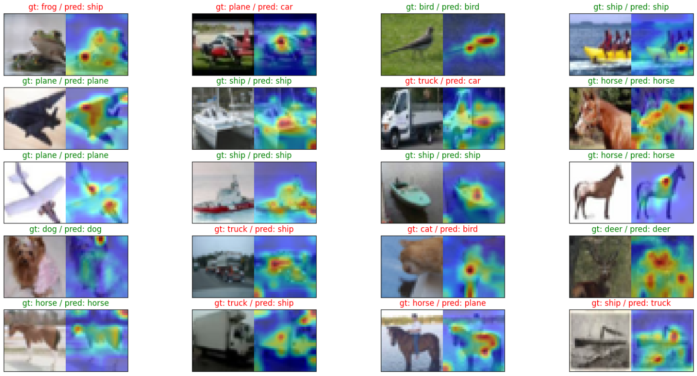
We’ll see how this is implemented in the following sections.
1. Quick Recap on How Self-Attention Works
In the Self-Attention mechanism, we represent words as vectors in an embedding space. By considering the context of other words, a machine-learning model can learn better word embeddings and improve its performance on NLP tasks.
To consider the context of other words, we compare the embedding vectors and calculate their similarity scores. In the embedding space, similar tokens share similar locations, so token vectors that are close together will have a higher similarity score.
As we pass word embeddings through self-attention in Transformer encoder blocks, the position of each embedding vector is updated to better reflect the meaning of its token in context, based on the other relevant words in the same sentence.
Recall this diagram from the previous Self-Attention project:
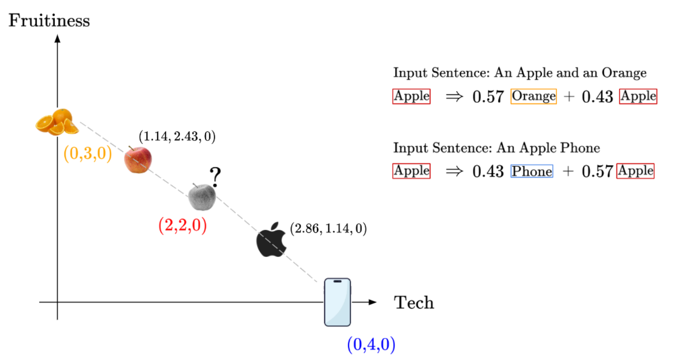
The initial embedding for the token “Apple” is the same for each possible interpretation of “Apple”, whether it refers to a fruit or a technology brand. By passing the tokens through attention encoder blocks, the “Apple” token is pushed towards its context-based meaning. The encoder with attention layers can therefore add contextual meaning to embeddings.
Usually, Transformer-based architectures contain several encoder blocks. Each encoder block consists of normalization layers, multi-head attention layers, and a multilayer perceptron (MLP) component.
Each encoder block encodes more information into the embeddings by taking context into account, producing a deeper semantic representation of each token. At the end of this process, we get optimized and improved embeddings.
To transform these information-rich embeddings into useful predictions, we need a final set of layers, usually called the “head”. Different heads are used for different tasks, such as classification, question answering, and Named Entity Recognition (NER).
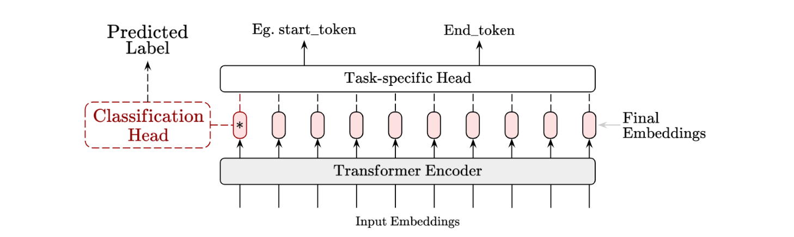
The Vision Transformer works similarly, but rather than taking word tokens as input, the ViT takes image patches. Aside from that, the overall Transformer architecture remains very similar for the ViT.
Next, we’ll overview the ViT architecture and make sense of its core components.
2. Overview of the Vision Transformer Architecture
This is the overall Vision Transformer architecture:
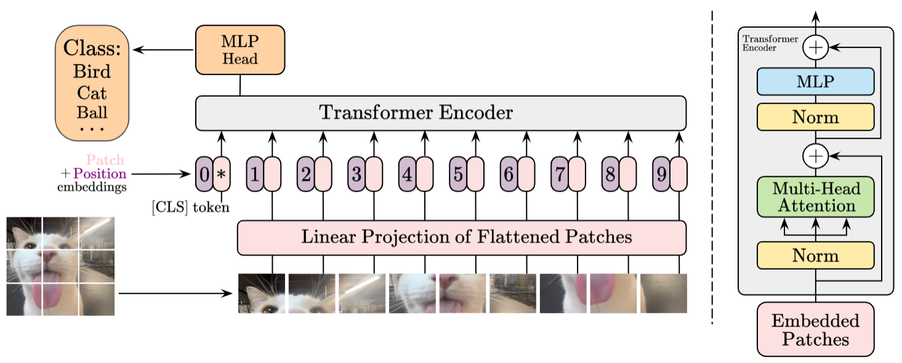
The Vision Transformer (ViT) is inspired by Transformer architectures used in NLP, particularly BERT, an encoder-only Transformer model.
The key idea behind ViT is to represent an image as a sequence of smaller, non-overlapping image patches. These patches are treated as input tokens, similar to words in NLP. Their embeddings are then processed by a Transformer, enabling the network to capture spatial relationships and patterns across the entire image.
Looking at the overall diagram, we can break the ViT into the following series of components and steps:
- Transform input images into embeddings
- Pass the embeddings through the Transformer Encoder
- Perform image classification with the CLS token
Next, we will cover the relevant theory for each portion while implementing the model in code as we go along.
3. Code-along Each Portion of the ViT
The changes introduced by the ViT are mostly limited to the first few processing steps, so most of the accompanying theoretical explanation will focus on Section 3.1 below.
3.1 Transform Input Images into Embeddings
We need to take an input image and first process it into a set of patch embeddings.
Some might ask: why not go more granular and feed the pixel values of the image directly into the model? Self-attention requires comparing every input token with every other token in order to learn context. If we process a small $32 \times 32$ image at the pixel level, we would have $32^2 = 1{,}024$ individual pixel tokens. Since self-attention has quadratic complexity, each token attends to every other token, resulting in $1{,}024^2 = 1{,}048{,}576$ attention computations per layer. That is only for a single attention layer in a multi-layer Transformer, making pixel-level processing computationally impractical.
Instead, we partition the image into patches and treat each patch as a token. These patches are embedded into a lower-dimensional representation, significantly reducing the number of tokens while still capturing meaningful spatial information before further processing.
Here is a high-level overview of the steps we need to take:
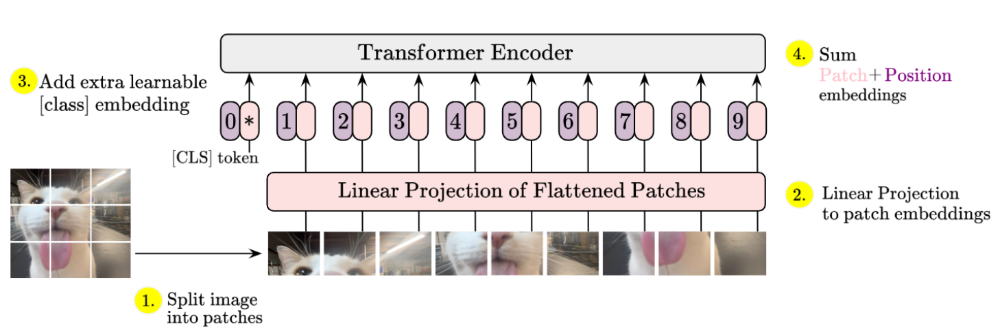
- Split the image into non-overlapping image patches.
- Embed patches into lower-dimensional embeddings through a linear projection.
- Prepend a trainable class embedding to the set of patch embeddings.
- Sum the patch embeddings with learned positional embeddings.
After these steps, the patch embeddings are processed like token embeddings in a typical Transformer. Let’s cover each sub-step in more detail.
1. Split the Image into Non-overlapping Image Patches
Splitting the image into non-overlapping image patches is a simple process, analogous to how sentences are split into tokens for NLP tasks.
Let’s assume a square image patch and define a variable, patch_size, which describes the size of our image patch, like so:
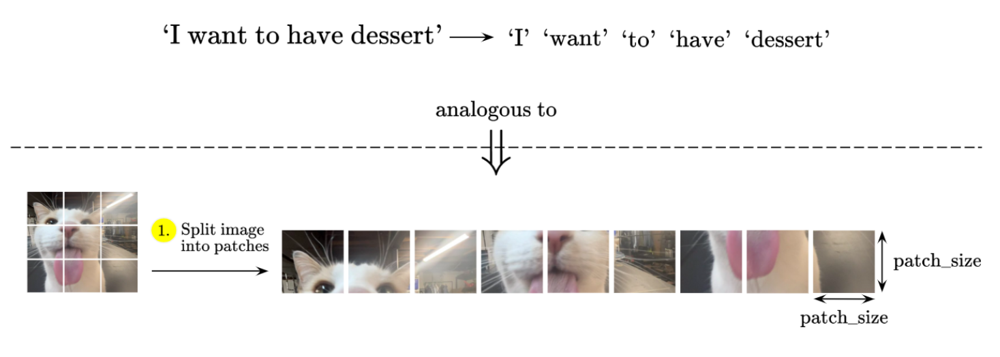
patch_size, analogous to tokenizing a sentence in NLP.2. Embed Patches into Lower-Dimensional Embeddings via Linear Projection
Next, we need to embed image patches into their embedded vector form. Let’s understand this mathematically.
Let’s say we’re working with $32 \times 32$ input images in RGB form. Then our input image is a $(3, 32, 32)$ tensor, where we have $3$ channels and a $32 \times 32$ shape.
If we define patch_size to be $4$, then each image patch is a $(3, 4, 4)$ 3D tensor.
The Transformer expects each token to be a flat feature vector of a fixed dimension. Let’s call the dimensionality of our desired embedding vector hidden_size.
Since each image patch is in 3D tensor form, we need a linear projection to flatten each patch while preserving its structure and map it into a fixed-dimensional embedding vector. This operation is represented mathematically as:
where $C \times P \times P$ is the original shape of each image patch, and $D$ is hidden_size. This linear projection learns to extract features from each image patch, just like an embedding layer in NLP.
Let’s implement the two steps above in code. To do so, we’ll define a PatchEmbeddings class to handle splitting an input image and embedding it as vectors, based on a user-defined dictionary of variables called config:
class PatchEmbeddings(nn.Module):
"""
Converts an input image into patches, then projects patches into embedded vectors.
"""
def __init__(self, config):
super().__init__()
self.image_size = config["image_size"]
self.patch_size = config["patch_size"]
self.num_channels = config["num_channels"]
self.hidden_size = config["hidden_size"]
self.num_patches = (self.image_size // self.patch_size) ** 2
self.projection = nn.Conv2d(
self.num_channels,
self.hidden_size,
kernel_size=self.patch_size,
stride=self.patch_size,
)
def forward(self, x):
x = self.projection(x)
x = x.flatten(2).transpose(1, 2)
return x
Notice that we use the nn.Conv2d() convolution layer to do two things at once:
- Split the image into non-overlapping patches by setting both
kernel_sizeandstridetopatch_size. - Perform a linear projection to the number of output channels defined by
hidden_size.
Let’s say our input has shape (B, 3, 32, 32), where we have $B$ RGB ($3$-channel) images of size $32 \times 32$, with patch_size $= 4$ and hidden_size $= 48$.
Passing (B, 3, 32, 32) into nn.Conv2d() outputs (B, 48, 8, 8), giving $8 \times 8 = 64$ patches from splitting each $32 \times 32$ image into patches of size $4$.
Then, passing the output (B, 48, 8, 8) into x.flatten(2).transpose(1, 2) performs two operations:
flatten(2)collapses the last two dimensions ($8 \times 8$) into one, resulting in shape(B, 48, 64).transpose(1, 2)swaps dimensions $1$ and $2$, yielding(B, 64, 48). This matches the(batch_size, num_patches, embedding_dim)shape expected by the Transformer.
Hence, each image has been transformed into a sequence of $64$ embedding vectors.
3. Prepend a Trainable Class Embedding to the Set of Patch Embeddings
One feature popularized in Transformer models like BERT is the use of a [CLS] (“classification”) token, a special token prepended to every input sequence.
In BERT, the [CLS] token does not represent any word from the input; instead, it serves as a global representation of the entire sequence. After passing through multiple self-attention layers, its final embedding is used for classification.
Because Transformers do not have a built-in pooling mechanism for aggregating information across tokens, ViT introduces a [CLS] token to:
- Serve as a global representation of the entire image.
- Interact with all other patch embeddings via self-attention.
- Be used for final image classification.
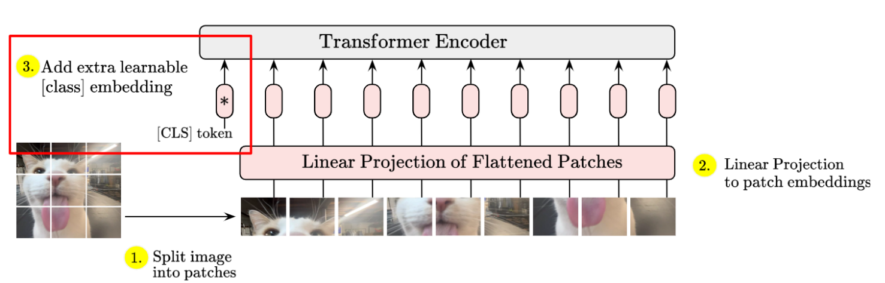
[CLS] token embedding to the sequence of patch embeddings.The [CLS] token’s embedding is learned and optimized during training.
4. Sum Our Patch Embeddings with Learned Positional Embeddings
Transformers treat all input tokens independently at first. The Self-Attention mechanism does not inherently recognize the order or spatial position of input tokens.
What are the implications of this? If we shuffle the input patches of two copies of the same image, the Vision Transformer would treat them as the same input since self-attention does not inherently track spatial positions. The ViT would then output the same result, leaving the model with a poor ability to understand image structure.
To preserve spatial information in ViTs, we add position embeddings to the patch embeddings before feeding them into the Transformer:
There are multiple ways to introduce position embeddings in ViTs, but the standard approach in the original ViT paper is to use learnable position embeddings with the same dimensionality as the patch embeddings.
Each patch index gets its own learnable position embedding, and during training, these embeddings are learned alongside the rest of the model.
One big question I had when learning about this topic was: why do we need to use learnable position embeddings specifically?
Earlier, we discussed why the model needs a spatial understanding of image patches. In the simplest case, if positional encodings were not learnable, for example if they were hardcoded using the raw $(x, y)$ coordinates of each image patch, the model might struggle to generalize across different spatial arrangements. With rigid hardcoded positions, the network might not interpret “cat at top of image” and “cat at bottom of image” similarly, introducing rigid spatial biases about image patches.
Instead, learnable position embeddings allow the model to flexibly adapt its spatial representation based on the data, helping it approximate a form of translational invariance.
Furthermore, in Appendix D.4 of the original ViT paper, the authors ran an ablation study comparing different positional embeddings and found that having any type of learnable position embedding (whether 1D, 2D, or relative) performed significantly better than having no positional embedding at all.
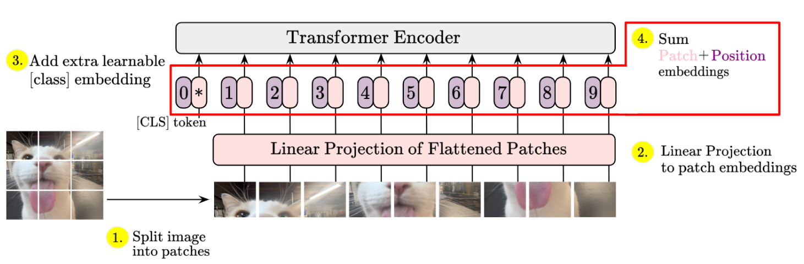
[CLS] token and projected patch embeddings.Here’s one last tidbit that might be interesting: notice that the additional [CLS] token we prepend for classification also receives a learnable positional embedding. Why?
Because the Transformer architecture does not inherently distinguish between token roles, without its own positional embedding the [CLS] token would be treated like any other image patch, and the model wouldn’t easily recognize that it serves a global, higher-level purpose.
Having a unique learnable position embedding helps the model recognize that this token plays a special role. Through self-attention, the [CLS] token then aggregates information from all patches to summarize the image effectively.
Let’s implement the two steps above in code by defining an Embeddings class that combines our patch embeddings with the [CLS] token and positional embeddings:
class Embeddings(nn.Module):
"""
Combines original patch embeddings with [CLS] token and position embeddings.
"""
def __init__(self, config):
super().__init__()
self.config = config
self.patch_embeddings = PatchEmbeddings(config)
self.cls_token = nn.Parameter(torch.randn(1, 1, config["hidden_size"]))
self.position_embeddings = nn.Parameter(
torch.randn(1, self.patch_embeddings.num_patches + 1, config["hidden_size"])
)
self.dropout = nn.Dropout(config["hidden_dropout_prob"])
def forward(self, x):
x = self.patch_embeddings(x)
batch_size, _, _ = x.size()
cls_tokens = self.cls_token.expand(batch_size, -1, -1)
x = torch.cat((cls_tokens, x), dim=1)
x = x + self.position_embeddings
x = self.dropout(x)
return x
- Notice that we initialize
self.cls_tokenas a single learnable token with shape(1, 1, hidden_size), representing(batch dimension placeholder, one token, hidden_size). - Next, we initialize
self.position_embeddingsas a learnable tensor of shape(1, num_patches + 1, hidden_size). The leading1broadcasts a single shared set of positional embeddings across all images in the batch, andnum_patches + 1accounts for the prepended[CLS]token. - We expand the single
[CLS]token to matchbatch_sizeusingself.cls_token.expand(batch_size, -1, -1), where-1tells PyTorch to keep the original size along that dimension. - We concatenate the
[CLS]token to the patch embeddings alongdim=1(the sequence length dimension). - Finally, after adding
self.position_embeddings, we applyself.dropout(x)for regularization.
After this step is complete, the input image has been converted into a sequence of patch embeddings with positional information, ready to be fed into the Transformer Encoder.
3.2 Pass through the Transformer Encoder
In this section, we’ll build the Transformer Encoder to process our combined image patch embeddings. As shown below, the Transformer Encoder is made up of several smaller components:
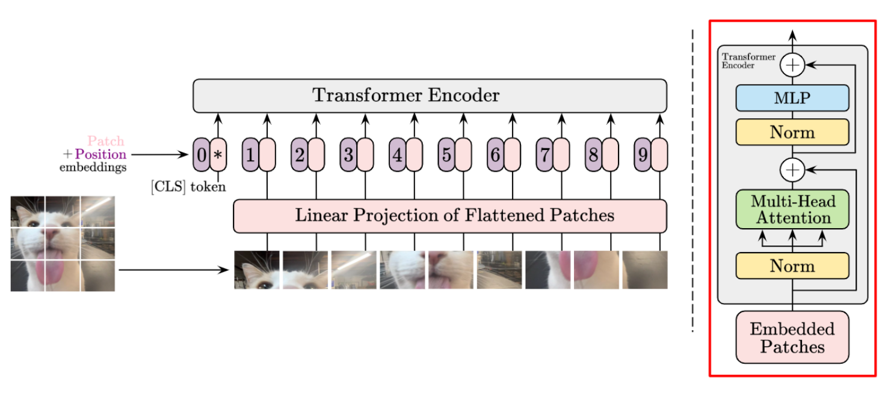
We’ll focus on building the core component first: the Multi-Head Attention module.
Multi-Head Attention Module
Multi-head attention is used to compute all pairwise self-attention interactions between image patches in the input image. The Multi-Head Attention module consists of smaller attention heads, each of which computes self-attention independently over different learned feature subspaces.
Let’s begin by implementing a single self-attention head first. Recall from our earlier Self-Attention project that an attention head takes a sequence of embeddings and computes the $K$, $Q$, and $V$ matrices:
class AttentionHead(nn.Module):
"""
Single attention head.
"""
def __init__(self, hidden_size, attention_head_size, dropout, bias=True):
super().__init__()
self.hidden_size = hidden_size
self.attention_head_size = attention_head_size
self.query = nn.Linear(hidden_size, attention_head_size, bias=bias)
self.key = nn.Linear(hidden_size, attention_head_size, bias=bias)
self.value = nn.Linear(hidden_size, attention_head_size, bias=bias)
self.dropout = nn.Dropout(dropout)
def forward(self, x):
query = self.query(x)
key = self.key(x)
value = self.value(x)
# Recall that Attention(Q, K, V) = softmax(Q K^T / sqrt(head_size)) V
attention_scores = torch.matmul(query, key.transpose(-1, -2))
attention_scores = attention_scores / math.sqrt(self.attention_head_size)
attention_probs = nn.functional.softmax(attention_scores, dim=-1)
attention_probs = self.dropout(attention_probs)
attention_output = torch.matmul(attention_probs, value)
return (attention_output, attention_probs)
- Note that
attention_head_sizedefines the reduced dimensionality per attention head. - We define the $K$, $Q$, and $V$ transformations as fully connected
nn.Linearlayers that map the input embeddings fromhidden_sizetoattention_head_size.
In the Multi-Head Attention module, the outputs from all individual attention heads are concatenated and linearly projected to obtain the final output of the module.
Next, let’s implement the Multi-Head Attention module:
class MultiHeadAttention(nn.Module):
"""
Multi-Head Attention module.
"""
def __init__(self, config):
super().__init__()
self.hidden_size = config["hidden_size"]
self.num_attention_heads = config["num_attention_heads"]
self.attention_head_size = self.hidden_size // self.num_attention_heads
self.all_head_size = self.attention_head_size * self.num_attention_heads
self.kqv_bias = config["kqv_bias"]
self.heads = nn.ModuleList([])
for _ in range(self.num_attention_heads):
head = AttentionHead(
self.hidden_size,
self.attention_head_size,
config["attention_probs_dropout_prob"],
self.kqv_bias,
)
self.heads.append(head)
self.output_projection = nn.Linear(self.all_head_size, self.hidden_size)
self.output_dropout = nn.Dropout(config["hidden_dropout_prob"])
def forward(self, x, output_attentions=False):
attention_outputs = [head(x) for head in self.heads]
attention_output = torch.cat(
[attn_output for attn_output, _ in attention_outputs], dim=-1
)
attention_output = self.output_projection(attention_output)
attention_output = self.output_dropout(attention_output)
if not output_attentions:
return (attention_output, None)
else:
attention_probs = torch.stack(
[attn_probs for _, attn_probs in attention_outputs], dim=1
)
return (attention_output, attention_probs)
- Notice the seemingly redundant calculation for
attention_head_sizeandall_head_size. Althoughall_head_sizeusually equalshidden_size, writing it this way keeps the implementation flexible ifhidden_sizeis not evenly divisible or differs in custom configurations. - Even when
all_head_size == hidden_size, thenn.Linear()output projection is crucial for re-weighting and mixing the contributions from different attention heads.
Completing the Transformer Encoder
To complete one full Transformer layer, we also need to implement the MLP layer, two normalization layers, and residual skip connections.
For the MLP layer, we’ll build a two-layer feed-forward network with a GELU activation in between:
class MLP(nn.Module):
"""
The Multi-Layer Perceptron module.
"""
def __init__(self, config):
super().__init__()
self.dense_1 = nn.Linear(config["hidden_size"], config["intermediate_size"])
self.activation = NewGELUActivation()
self.dense_2 = nn.Linear(config["intermediate_size"], config["hidden_size"])
self.dropout = nn.Dropout(config["hidden_dropout_prob"])
def forward(self, x):
x = self.dense_1(x)
x = self.activation(x)
x = self.dense_2(x)
x = self.dropout(x)
return x
Now that we have implemented the Multi-Head Attention module and the MLP layer, we can combine them into a full Transformer layer with skip connections and layer normalization.
We’ll call this class Block, since multiple Transformer layers (or blocks) are stacked sequentially to form the complete Transformer Encoder:
class Block(nn.Module):
"""
A single, full Transformer layer.
"""
def __init__(self, config):
super().__init__()
self.attention = MultiHeadAttention(config)
self.layernorm_1 = nn.LayerNorm(config["hidden_size"])
self.mlp = MLP(config)
self.layernorm_2 = nn.LayerNorm(config["hidden_size"])
def forward(self, x, output_attentions=False):
attention_output, attention_probs = self.attention(
self.layernorm_1(x), output_attentions=output_attentions
)
x = x + attention_output # skip connection
mlp_output = self.mlp(self.layernorm_2(x))
x = x + mlp_output # skip connection
if not output_attentions:
return (x, None)
else:
return (x, attention_probs)
Finally, we’ll build the full Transformer Encoder, which stacks multiple Transformer blocks sequentially:
class Encoder(nn.Module):
"""
Transformer Encoder module.
"""
def __init__(self, config):
super().__init__()
self.blocks = nn.ModuleList([])
for _ in range(config["num_hidden_layers"]):
block = Block(config)
self.blocks.append(block)
def forward(self, x, output_attentions=False):
all_attentions = []
for block in self.blocks:
x, attention_probs = block(x, output_attentions=output_attentions)
if output_attentions:
all_attentions.append(attention_probs)
if not output_attentions:
return (x, None)
else:
return (x, all_attentions)
3.3 Do Image Classification with the CLS Token
Now that the full Transformer Encoder is implemented, we obtain updated, context-rich embeddings for the image patches and the [CLS] token.
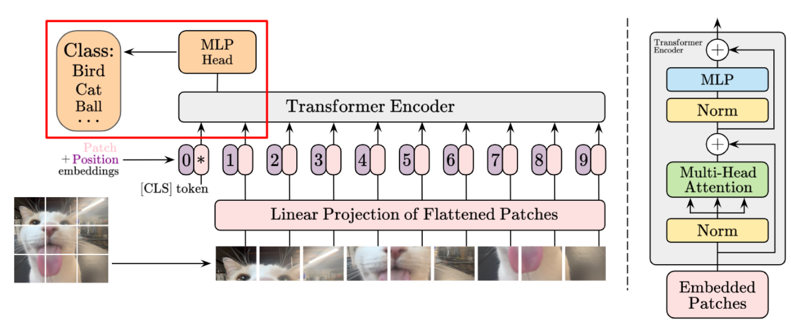
[CLS] token representation into the classification head to predict class logits.To turn these embeddings into useful predictions, we pass the [CLS] token embedding into a classification layer, a fully connected layer that takes the [CLS] embedding of size hidden_size and outputs logits for each image class.
Here’s the code implementation for the full ViT classifier model:
class ViTClassifier(nn.Module):
"""
The full ViT model for image classification.
"""
def __init__(self, config):
super().__init__()
self.config = config
self.image_size = config["image_size"]
self.hidden_size = config["hidden_size"]
self.num_classes = config["num_classes"]
self.embedding = Embeddings(config)
self.encoder = Encoder(config)
self.classifier = nn.Linear(self.hidden_size, self.num_classes)
self.apply(self._init_weights)
def forward(self, x, output_attentions=False):
embedding_output = self.embedding(x)
encoder_output, all_attentions = self.encoder(
embedding_output, output_attentions=output_attentions
)
logits = self.classifier(encoder_output[:, 0])
if not output_attentions:
return (logits, None)
else:
return (logits, all_attentions)
def _init_weights(self, module):
if isinstance(module, (nn.Linear, nn.Conv2d)):
torch.nn.init.normal_(
module.weight, mean=0.0, std=self.config["initializer_range"]
)
if module.bias is not None:
torch.nn.init.zeros_(module.bias)
elif isinstance(module, nn.LayerNorm):
module.bias.data.zero_()
module.weight.data.fill_(1.0)
elif isinstance(module, Embeddings):
module.position_embeddings.data = nn.init.trunc_normal_(
module.position_embeddings.data.to(torch.float32),
mean=0.0,
std=self.config["initializer_range"],
).to(module.position_embeddings.dtype)
module.cls_token.data = nn.init.trunc_normal_(
module.cls_token.data.to(torch.float32),
mean=0.0,
std=self.config["initializer_range"],
).to(module.cls_token.dtype)
Note that _init_weights() ensures all parameters start with reasonable values to avoid unstable training. Using PyTorch’s self.apply(), it inspects each module type and applies the appropriate parameter initialization across every layer of the model.
4. Results
In this section, we’ll review the results from training our image-classifying ViT model. The full implementation was written in a Jupyter notebook.
First, here’s a quick preview of the $32 \times 32$ images contained in the CIFAR-10 dataset:
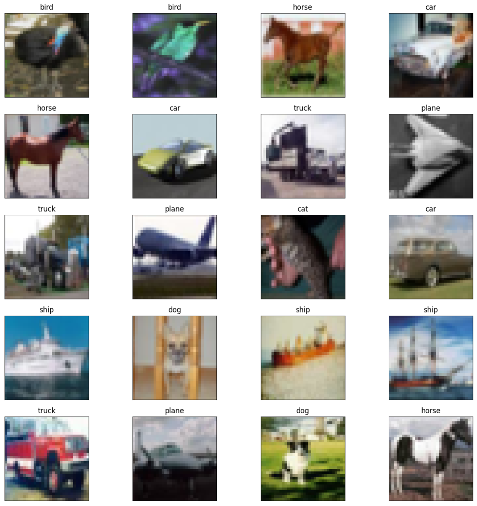
I trained the model for $50$ epochs, attaining a final test accuracy of $64\%$.
Here are two plots showing how training loss, validation loss, and validation accuracy changed over the epochs:
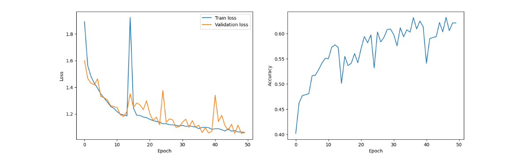
Perhaps most interesting of all, here’s a visualization of how the model computes attention over the images. We can see that the model generally learned to focus on the key subject of each image while ignoring the background:
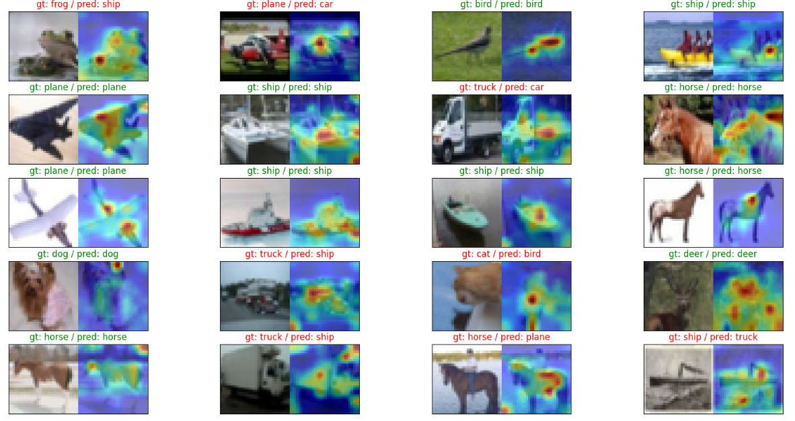